अध्याय 7: वैश्वीकरण - भाग 1 (परिचय, अवधारणा एवं वैश्विक प्रवाह)
समकालीन विश्व-राजनीति का सबसे प्रभावशाली और बहुचर्चित आयाम वैश्वीकरण (Globalization) है। यह एक ऐसी प्रक्रिया है जिसने भौगोलिक दूरियों को समेटकर पूरी दुनिया को एक 'वैश्विक गाँव' (Global Village) में बदल दिया है।
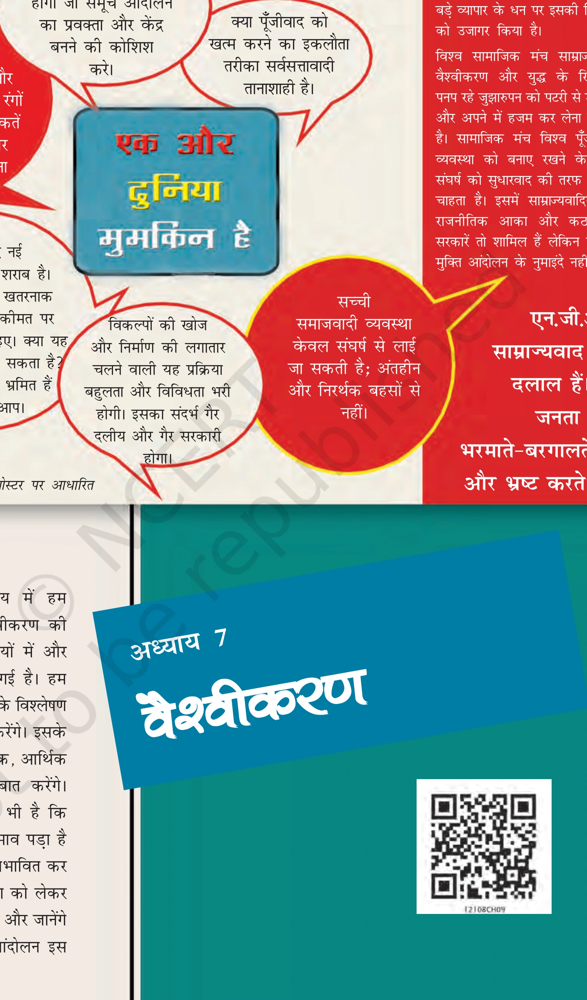
1. वैश्वीकरण की अवधारणा: तीन व्यावहारिक उदाहरण
वैश्वीकरण को समझने के लिए एनसीईआरटी पाठ्यपुस्तक में दिए गए तीन व्यावहारिक उदाहरण अत्यंत महत्वपूर्ण हैं:
- जनार्दन की कहानी (कॉल सेंटर कर्मचारी): जनार्दन एक कॉल सेंटर में काम करता है। वह रात में अमेरिकी ग्राहकों को सेवा देने के लिए अपना नाम 'जॉन' रख लेता है और अमेरिकी अंग्रेजी में बात करता है। वह भारत में बैठकर हजारों मील दूर अमेरिका के लोगों की समस्याओं को हल कर रहा है।
- रामधारी की कहानी (उपहार और वैश्विक वस्तुएँ): रामधारी अपनी बेटी के लिए जन्मदिन पर एक ऐसी साइकिल खरीदता है जो चीन में बनी है, लेकिन भारत के बाजार में आसानी से और सस्ती दर पर उपलब्ध है।
- बालिका की कहानी (सांस्कृतिक पसंद): एक नवयुवती अपनी स्कूली परीक्षा पास करने की खुशी में अपनी पारंपरिक पोशाक के बजाय जींस और टी-शर्ट पहनना पसंद करती है।

2. वैश्वीकरण का मूल अर्थ और 'प्रवाह के चार रूप'
वैश्वीकरण की मूल अवधारणा प्रवाह (Flows) से जुड़ी है। वैश्वीकरण का अर्थ है विश्व के एक हिस्से के लोगों, विचारों, पूंजी और वस्तुओं का दुनिया के दूसरे हिस्सों में निर्वाध और त्वरित प्रवाह।
- 1. विचारों का प्रवाह (Flow of Ideas): इंटरनेट, टेलीविजन और मीडिया के माध्यम से ज्ञान और विचारों का विश्व भर में फैलना।
- 2. पूंजी का प्रवाह (Flow of Capital): अंतर्राष्ट्रीय व्यापार और शेयर बाजारों के जरिए पैसे और निवेश का एक देश से दूसरे देश में हस्तांतरण।
- 3. वस्तुओं का प्रवाह (Flow of Goods): विभिन्न देशों में बनी निर्मित वस्तुओं का वैश्विक बाजारों में बेचा जाना।
- 4. लोगों का प्रवाह (Flow of People): बेहतर आजीविका, शिक्षा और अवसरों की तलाश में लोगों का अंतर्राष्ट्रीय आवागमन।
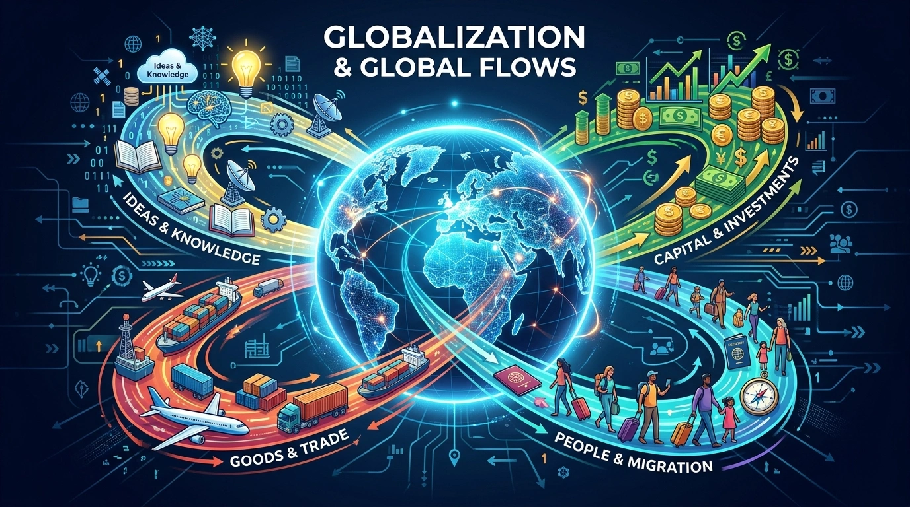
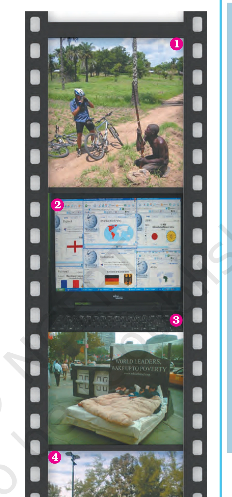
3. वैश्वीकरण के मुख्य कारण (Technology & Connectivity)
वैश्वीकरण कोई अचानक घटने वाली घटना नहीं है, बल्कि इसके पीछे सबसे बड़ा कारण तकनीकी प्रगति (Technological Advancement) है:
- टेलीग्राफ, टेलीफोन और माइक्रोचिप: इन आविष्कारों ने दुनिया के विभिन्न हिस्सों के बीच संचार की गति को कई गुना बढ़ा दिया।
- इंटरनेट और फाइबर ऑप्टिक नेटवर्क: इंटरनेट ने सूचनाओं और विचारों के प्रवाह को तात्क्षणिक (Instantaneous) बना दिया।
- परिवहन क्रांति: हवाई जहाजों और विशाल मालवाहक जहाजों (Container Ships) ने माल ढुलाई की लागत कम कर दी।
अध्याय 7: वैश्वीकरण - भाग 2 (वैश्वीकरण के राजनीतिक प्रभाव)
वैश्वीकरण का प्रभाव केवल अर्थव्यवस्था तक सीमित नहीं है, बल्कि इसने राष्ट्र-राज्यों की राजनीतिक व्यवस्था, सरकार के कार्यों और राज्य की संप्रभुता को गहराई से प्रभावित किया है।
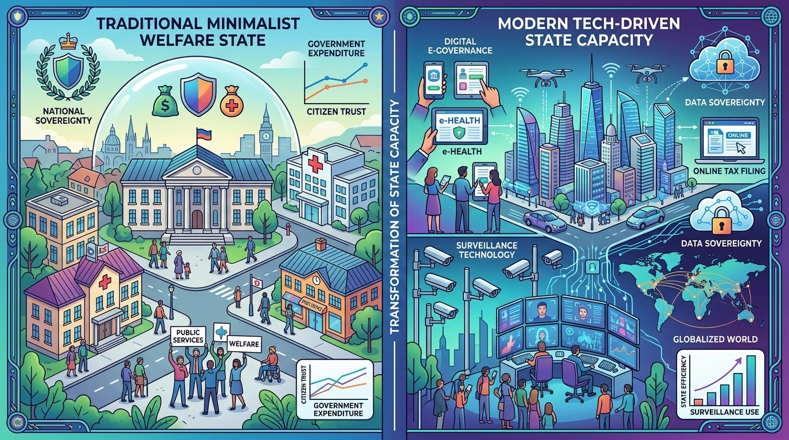
1. कल्याणकारी राज्य का ह्रास और 'न्यूनतम हस्तक्षेपकारी राज्य'
वैश्वीकरण के कारण राज्य की अवधारणा में निम्नलिखित मुख्य राजनीतिक बदलाव आए हैं:
- कल्याणकारी राज्य का पीछे हटना: पहले राज्य का मुख्य काम अपने नागरिकों के स्वास्थ्य, शिक्षा और सामाजिक सुरक्षा की जिम्मेदारी उठाना (Welfare State) था। वैश्वीकरण के दौर में अब राज्य कल्याणकारी कार्यों से पीछे हट रहा है।
- न्यूनतम हस्तक्षेपकारी राज्य (Minimalist State): अब राज्य की भूमिका केवल कानून-व्यवस्था बनाए रखने और आंतरिक व बाह्य सुरक्षा प्रदान करने तक सीमित होती जा रही है।
- बाजार की शक्तियों का वर्चस्व: आर्थिक और सामाजिक प्राथमिकताओं का निर्धारण अब राज्य की बजाय 'बाजार की शक्तियां' (Market Forces) करती हैं।
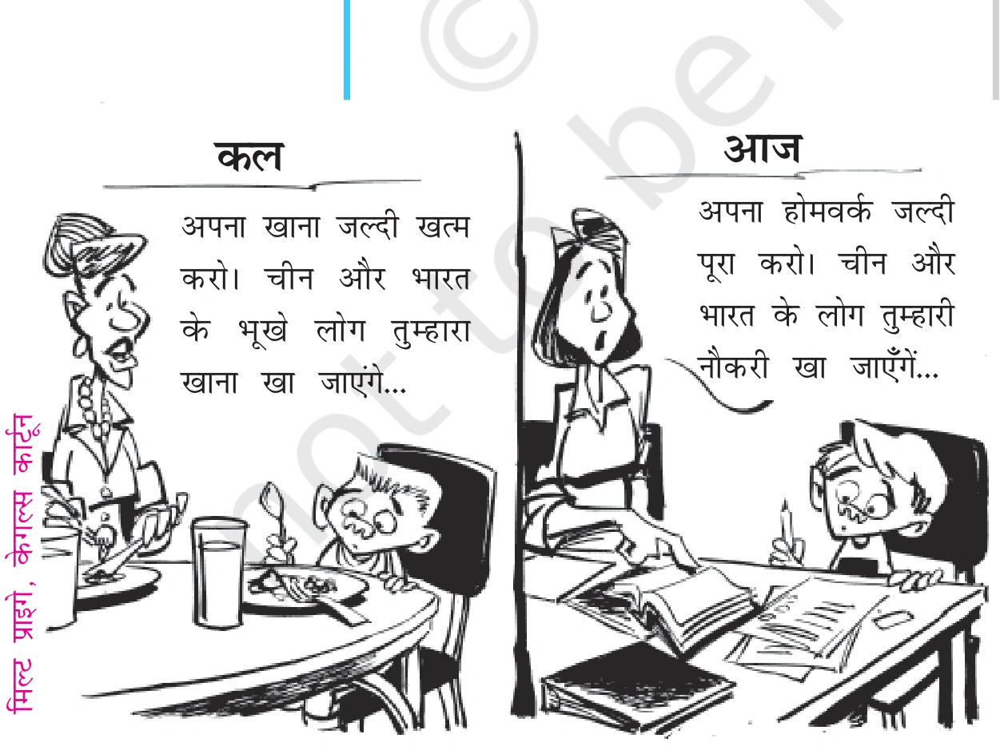
2. क्या राज्य की संप्रभुता समाप्त हो गई है? (दूसरा दृष्टिकोण)
वैश्वीकरण के आलोचकों का मानना है कि राज्य कमजोर हुआ है, लेकिन एनसीईआरटी पाठ्यपुस्तक के अनुसार वैश्वीकरण के कारण राज्य समाप्त नहीं हुआ है बल्कि उसकी कार्यप्रणाली में बदलाव आया है:
अध्याय 7: वैश्वीकरण - भाग 3 (वैश्वीकरण के आर्थिक प्रभाव)
वैश्वीकरण का सबसे गहन और सीधा असर आर्थिक क्षेत्र में देखा गया है। आर्थिक वैश्वीकरण के तहत अंतर्राष्ट्रीय व्यापार, निवेश और पूंजी प्रवाह के रास्ते में आने वाली बाधाओं को समाप्त किया गया है।
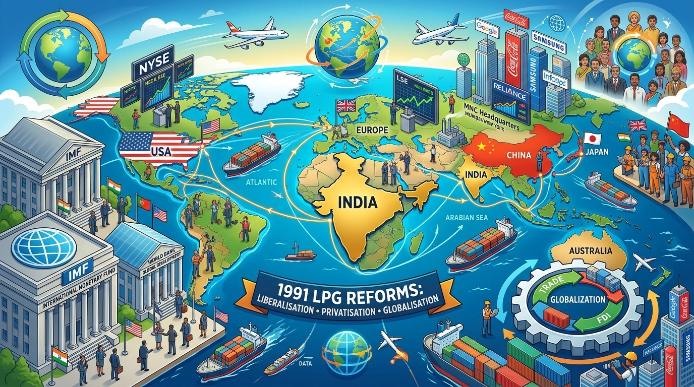
1. आर्थिक वैश्वीकरण के मुख्य आयाम
आर्थिक वैश्वीकरण में अंतर्राष्ट्रीय वित्तीय संस्थाओं जैसे अंतर्राष्ट्रीय मुद्रा कोष (IMF), विश्व बैंक (World Bank) और विश्व व्यापार संगठन (WTO) की केंद्रीय भूमिका रही है:
- आयात-निर्यात प्रतिबंधों में ढील: विभिन्न देशों ने अपने यहाँ आने वाले विदेशी माल (आयात) पर लगने वाले टैरिफ और सीमाओं को समाप्त या बहुत कम कर दिया।
- पूंजी की मुक्त आवाजाही: अमीर देशों के निवेशक अब विकासशील देशों में सीधे शेयर या विनिर्माण खदानों में पैसा (FDI) लगा सकते हैं।
- विषमता (अपेक्षाकृत सीमित श्रम प्रवाह): जबकि पूंजी और वस्तुओं का प्रवाह बहुत तेजी से बढ़ा है, विकसित देशों ने वीजा और आव्रजन नियमों को कड़ा करके गरीब देशों के श्रमिकों और मजदूरों (Labor Flow) की आवाजाही को रोक रखा है।
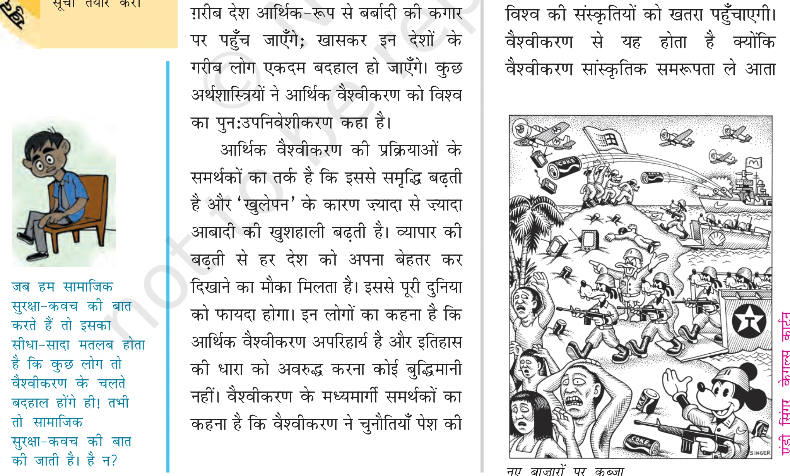
2. आर्थिक वैश्वीकरण: सामाजिक सुरक्षा कवच की आवश्यकता
आर्थिक वैश्वीकरण के कारण समाज दो वर्गों में विभाजित हुआ है—एक वर्ग को अत्यधिक लाभ हुआ (विजेता) जबकि दूसरा वर्ग हाशिए पर धकेला गया (पराजित):
अध्याय 7: वैश्वीकरण - भाग 4 (वैश्वीकरण के सांस्कृतिक प्रभाव)
वैश्वीकरण का प्रभाव हमारे खान-पान, पहनावे, भाषा, संगीत और सोचने के तरीके पर गहराई से पड़ता है। इसे सांस्कृतिक वैश्वीकरण (Cultural Globalization) कहा जाता है।
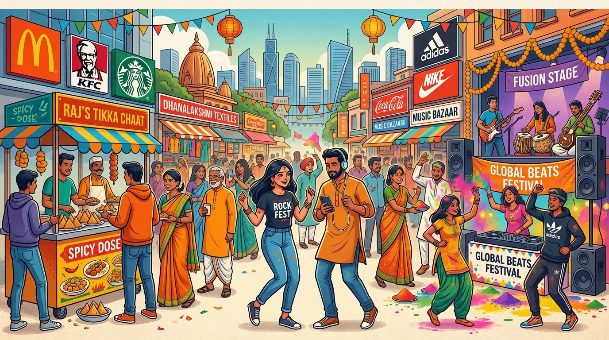
1. सांस्कृतिक समरूपता और 'मैकडोनाल्डीकरण' (McDonaldization)
सांस्कृतिक वैश्वीकरण का एक पहलू दुनिया में एक सर्वसामान्य विश्व-संस्कृति के उभरने का है:
- सांस्कृतिक समरूपता (Cultural Homogenization): पूरी दुनिया में एक जैसी संस्कृति का कायम होना। इसमें दुनिया भर के समाजों में अमेरिकी और पश्चिमी मूल्यों, खान-पान और पहनावे का बोलबाला हो जाता है।
- मैकडोनाल्डीकरण (McDonaldization): अमेरिकी फास्ट फूड संस्कृति (बर्गर, कोका-कोला) का विश्व भर में फैलना, जिससे स्थानीय खान-पान की विविधता खत्म होने का खतरा पैदा होता है।
- सांस्कृतिक प्रभुत्व का खतरा: यह केवल खान-पान तक सीमित नहीं है, बल्कि यह लोगों के सोचने के तरीके और जीवन-मूल्यों को बदल देता है।
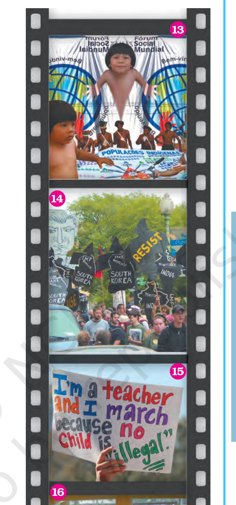
2. सांस्कृतिक वैषम्यीकरण (Cultural Heterogenization - सकारात्मक पक्ष)
एनसीईआरटी पाठ्यपुस्तक के अनुसार सांस्कृतिक वैश्वीकरण केवल एकतरफा पश्चिमीकरण नहीं है, इसका एक दूसरा पहलू भी है:
अध्याय 7: वैश्वीकरण - भाग 5 (भारत और वैश्वीकरण एवं वैश्वीकरण का प्रतिरोध)
वैश्वीकरण का भारत पर गहरा प्रभाव पड़ा है। भारत औपनिवेशिक काल से ही वैश्विक अर्थव्यवस्था का हिस्सा रहा है, लेकिन 1991 के वित्तीय संकट के बाद भारत ने अपनी आर्थिक नीतियों में बुनियादी बदलाव किया।

1. भारत में 1991 के नई आर्थिक नीति (LPG Reforms)
1991 में भारत में उत्पन्न गंभीर वित्तीय संकट और विदेशी मुद्रा भंडार की कमी के कारण भारत सरकार ने नई आर्थिक नीति (New Economic Policy 1991) अपनाई:
- उदारीकरण (Liberalisation): व्यापार, लाइसेंसिंग और उद्योगों पर लगे सरकारी कड़े नियंत्रणों और लालफीताशाही को समाप्त किया गया।
- निजीकरण (Privatisation): सार्वजनिक क्षेत्र (सरकारी उपक्रमों) के शेयरों को निजी निवेशकों और बहुराष्ट्रीय कंपनियों के लिए खोला गया।
- वैश्वीकरण (Globalisation): भारतीय अर्थव्यवस्था को विश्व अर्थव्यवस्था से जोड़ा गया और विदेशी प्रत्यक्ष निवेश (FDI) की अनुमति दी गई।
2. वैश्वीकरण का विरोध: वामपंथी और दक्षिणपंथी समालोचना
वैश्वीकरण का विरोध दुनिया भर में दो अलग-अलग राजनीतिक विचारधाराओं द्वारा किया जाता है:
- वामपंथी समालोचना (Leftist Critique): वामपंथियों का मानना है कि वैश्वीकरण पूँजीवाद का एक नया रूप है जो धनवानों को और अमीर तथा गरीबों को और गरीब बना रहा है। इससे राज्य कमजोर होता है और बहुराष्ट्रीय कंपनियां गरीबों का शोषण करती हैं।
- दक्षिणपंथी समालोचना (Rightist Critique): दक्षिणपंथियों की मुख्य चिंता सांस्कृतिक और राजनीतिक है। वे डरते हैं कि वैश्वीकरण से स्वदेशी संस्कृति, भाषा, पारंपरिक मूल्य और राष्ट्रीय संप्रभुता नष्ट हो जाएगी (जैसे वेलेंटाइन डे का विरोध या स्वदेशी उत्पादों पर जोर)।
3. वर्ल्ड सोशल फोरम (World Social Forum - WSF)
वैश्वीकरण और नव-उदारवादी पूंजीवाद के खिलाफ दुनिया भर के सामाजिक कार्यकर्ताओं, पर्यावरणविदों, ट्रेड यूनियनों और युवाओं का सबसे बड़ा साझा मंच वर्ल्ड सोशल फोरम (WSF) है:
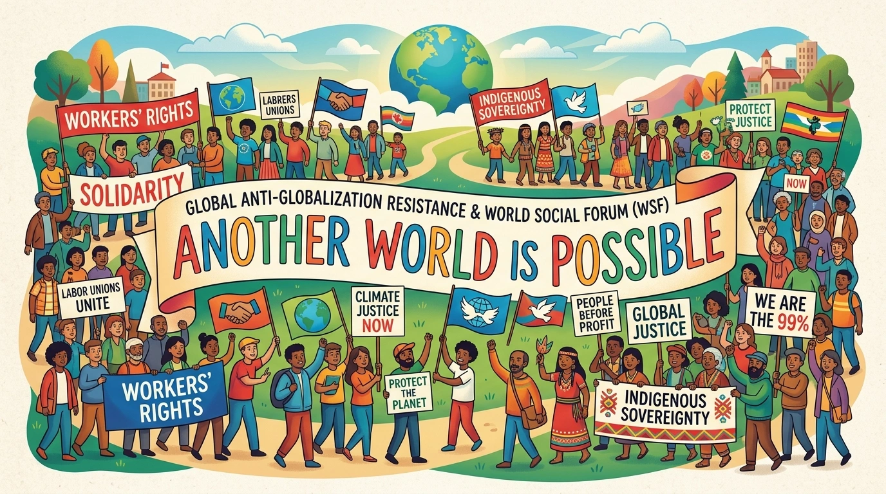
- स्थापना व प्रथम बैठक (2001 Porto Alegre, Brazil): WSF की पहली बैठक वर्ष 2001 में पोर्टो एलेग्रे (ब्राजील) में आयोजित हुई।
- चौथी बैठक (2004 मुंबई, भारत): WSF की चौथी ऐतिहासिक बैठक 2004 में मुंबई (भारत) में हुई, जिसमें हजारों सामाजिक कार्यकर्ताओं ने भाग लिया।
- मूल नारा: "एक दूसरी दुनिया संभव है" (Another World is Possible)।
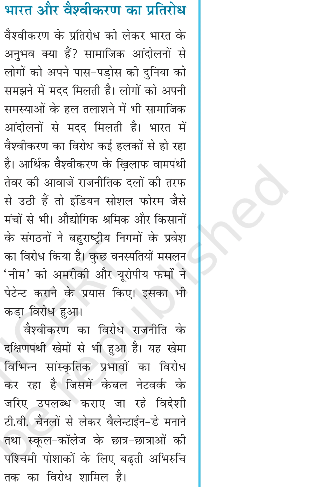
4. भारत में वैश्वीकरण का विरोध
भारत में वैश्वीकरण का विरोध कई मोर्चों पर हो रहा है:
- ट्रेड यूनियन और किसान आंदोलन: भारतीय किसान यूनियन (BKU) और वामपंथी मजदूर यूनियनों ने पेटेंट कानूनों, बहुराष्ट्रीय कंपनियों के बीज एकाधिकार और किसानों की आत्महत्या के मुद्दों पर विरोध जताया।
- स्वदेशी जागरण मंच: स्वदेशी उत्पादों के इस्तेमाल और विदेशी रिटेल बहुराष्ट्रीय कंपनियों (जैसे वालमार्ट, अमेजन) का विरोध।
- सांस्कृतिक विरोध: बहुराष्ट्रीय टीवी चैनलों, पश्चिमी पहनावे और पश्चिमी त्यौहारों के अत्यधिक प्रभाव के खिलाफ विरोध।